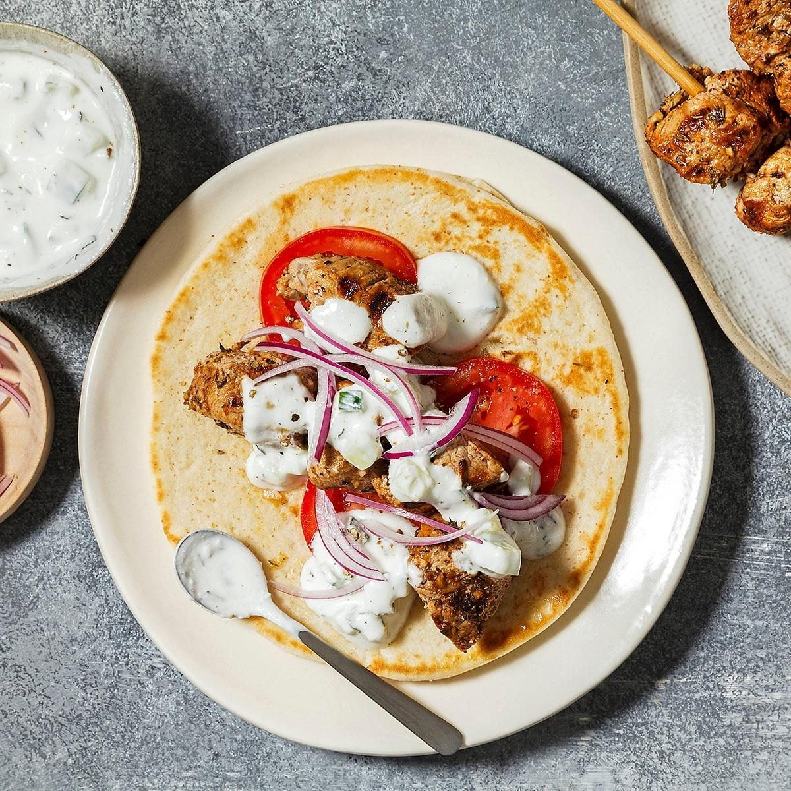

Pork Souvlaki with Tzatziki

- Meal
- Dinner
- Serves
- 6
- Protein
- pork
- Cook
- grill · 25 min active / 30 min total (+ 1 hr marinate) · easy
- Make-ahead / leftovers
- yes / yes
- Mediterranean
- yes
- WW tier
- light
- Status
- Trying out (probation)
Taste of Home's Greek souvlaki — pork tenderloin cubes marinated in olive oil, lemon, red wine vinegar, garlic, oregano, and thyme, grilled on skewers and piled into pitas with tomato, red onion, and a quick cucumber tzatziki. Grill-weekend option that isn't steak, chops, or chicken kabobs.
Ingredients
Marinade
- 1/2 cup olive oil
- 1/3 cup red wine vinegar
- 1/3 cup lemon juice (plus zest of 1 lemon)
- 6 garlic cloves, minced
- 3 Tbsp fresh thyme leaves (or 1 Tbsp dried)
- 1 Tbsp salt
- 1 Tbsp dried oregano
- 1 1/2 tsp paprika
- 3/4 tsp pepper
- 2 1/4 lb pork tenderloin (2 tenderloins), 1-inch cubes
- 6–8 skewers (soak wooden ones 30 min)
Tzatziki
- 1 1/2 cups plain Greek yogurt
- 1/3 English cucumber, finely chopped
- 1 1/2 Tbsp lemon juice
- 2 tsp olive oil
- 1/3 tsp salt
- 1 1/2 Tbsp minced fresh mint, optional
To serve
- 6 whole-wheat pitas (or brown rice — house rule: always brown)
- 3 tomatoes, sliced
- 1 red onion, thinly sliced
Method
- Whisk the marinade ingredients in a large bowl. Add the pork, toss, cover, and refrigerate at least 1 hour (up to overnight).
- Mix the tzatziki; refrigerate.
- Heat the grill to ~400°F. Thread 4–5 cubes per skewer, not packed tight, and brush with leftover marinade (then discard the rest).
- Grill 4–5 minutes per side until just cooked through (145°F).
- Warm the pitas on the grill a few seconds. Slide the pork off the skewers onto pitas with tomato, onion, and tzatziki.
Notes
- Scaled ×1.5 from Taste of Home's 1.5 lb tenderloin / 4 skewers.
- Oven option (no grill): skewers on a rack over a sheet pan at 425°F, ~15–20 minutes, turning once, to 145°F.
- Not Chicken Kabobs (chicken + vegetables on the skewer, cumin-paprika marinade) and not Tzatziki Bowls (taco-seasoned ground beef). This is the classic Greek pita build.
- Pork counts toward the ≤2 red-meat cap. Mediterranean ✓ with whole-wheat pita or brown rice (olive oil, vegetables, whole-ish carb; pork is the miss). light.